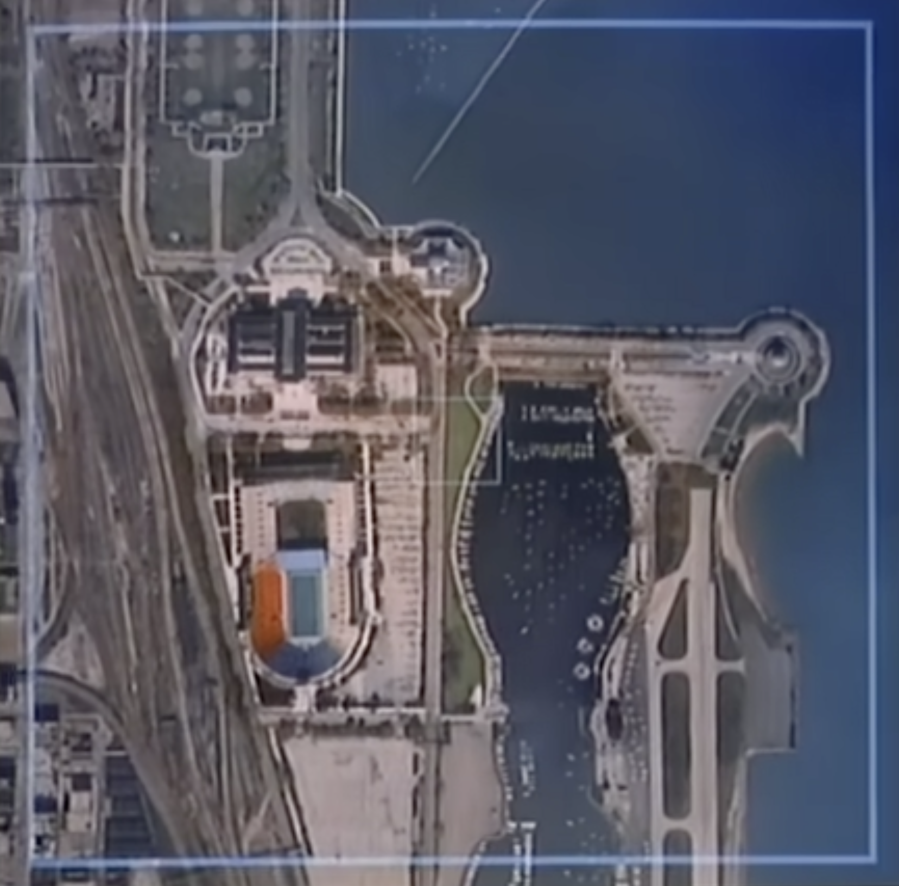
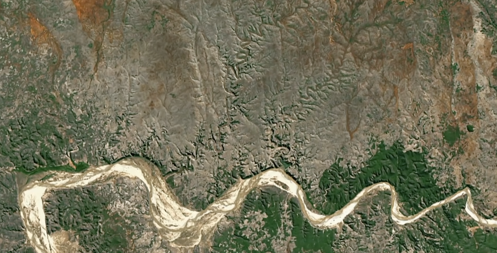
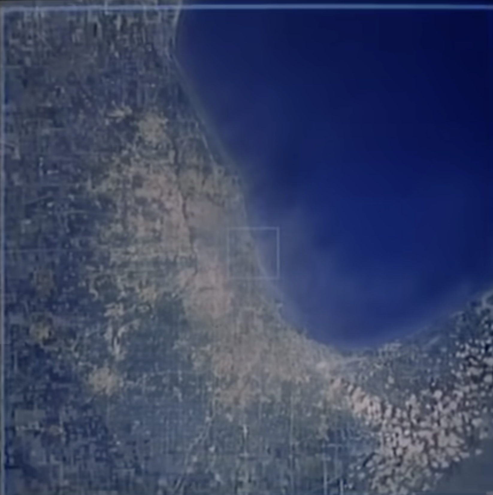
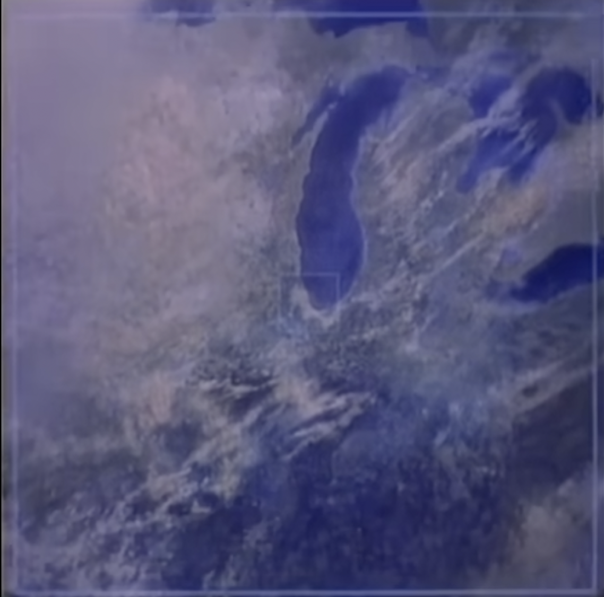
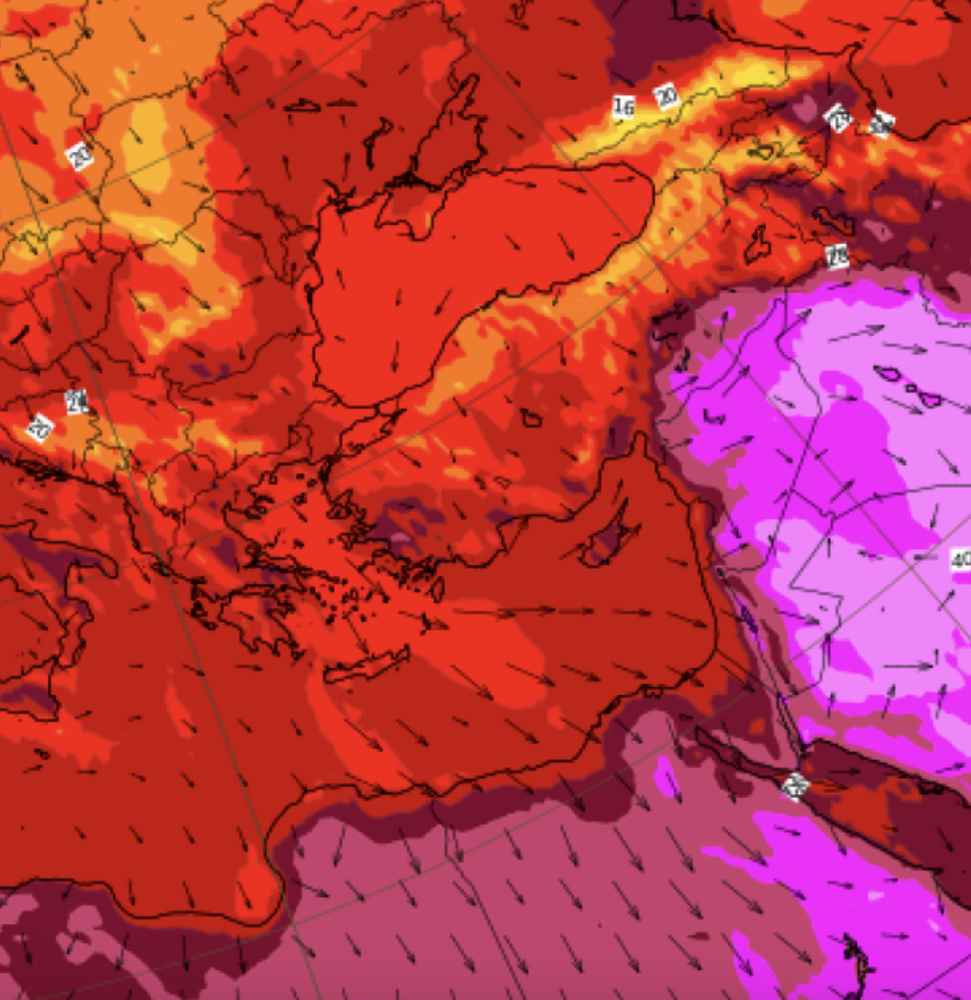

Powers of Ten
Then & Now
POWERS OF
TEN
TEN
10
The picnic near the lake shore in Chicago was the start of a lazy afternoon. Early One October We begin with a scene 1 meter wide, which we view from 1 meter away. Now every 10 seconds we will look from 10x farther away and our field of view will be 10x wider. This square is 10 meters wide and in 10 seconds the next square will be 10x as wide. Our image is the center of the picnickers, even after they've been lost to sight. 100 meters wide, the distance a man can run in 10 seconds. Cars crowd the highway, power boats lie at their docks. The colorful bleachers of Soldier's Field. This square is 1 kilometer wide, 1000 meters, the distance a racing car can travel in 10 seconds. We see the great city on the lake shore. 10 to the 4th meter, ten kilometers, the distance a supersonic airplane can travel in 10 seconds. We see the first round end of Lake Michigan, then the whole Great Lake. 10 to the 5th meters, the distance an orbiting satellite covers in 10 seconds. Long parades of clouds, the day weather of the Mid-West. 10 to the 6th, one million meters. Soon the Earth will show us its solid sphere. We are able to see the whole Earth now, just over a minute along the journey. The Earth diminishes in the distance, but the background stars are so much farther away. They do not yet appear to move. A line extends at the true speed of light. In 1 second we cross the tilted orbit of the Moon. Now we mark a small part of the path which the Earth moves about the Sun. Now the orbits of the neighbor planets Venus, Mars and Mercury come into view. Entering our field of view is the glowing center of our Solar System, the Sun. Followed by the massive other planets, swinging wide in their big orbits. That orbit belongs to Pluto. A fringe of myriad comets too faint to see completes the solar system. 10 to the 14th. While our Solar System shrinks into one bright point in the distance, our Sun is now only one among the stars. This square is 10 to the 16th meters, one light year, not yet out to the next star. Our last 10 second step took us 10 light years further. The next will be 100. Our perspective changes so much on each step now that even the background stars will appear to converge. At last we pass the bright star Arcturus and some stars in the deeper distance. Normal but quite unfamiliar stars and clouds of gas surround us as we traverse the Milky Way Galaxy. Giant steps carry us into the outskirts of the galaxy. As we pull away we begin to see the great flat spiral facing us. The time and path we chose to leave Chicago has brought us out of the galaxy along a course nearly perpendicular to its disc. The two little satellite galaxies of our own are the Clouds of Magellan. 10 to the 22nd power. One million light years. Groups of galaxies bring a new level of structure to the scene. Glowing points are no longer single stars, but whole galaxies of stars seen as one. We pass the great Virgo cluster of galaxies among many others. 100 million light years out, as we approach the limits of our vision, we pause to start back home. This lonely scene, the galaxies like dust, is what most of space looks like. This emptiness is normal. The richness of our own neighborhood is the exception. The trip back to the picnic on the lake front will be a sped up version, reducing the scale by one power of ten every 2 seconds. In each two seconds we will appear to cover 90% of the remaining distance back to Earth. Notice the alternation between great activity and relative inactivity — a rhythm that will continue all the way until our next goal: a proton in the nucleus of a carbon atom beneath the skin of the hand of a man at the picnic. 10 to the 9th... 8... 7... 6... 5... 4... 3... 2... 1... We are back at our starting point. We slow at one meter, 10 to the zero power. Now we reduce the distance to our final destination by 90% every 10 seconds, each step much smaller than the one before. At 10 to the -2, one centimeter, we approach the surface of the hand. In a few seconds we will enter the skin, crossing layer after layer from the outermost dead cells into a tiny blood vessel within. Skin layers vanish in turn. An outer layer of cells, feltlike collagen. The capillary containing red blood cells and a lone lymphocyte. We enter the white cell. Among its vital organelles, the porous wall of the cell nucleus appears. The nucleus within holds the heredity of the man in the coiled coils of DNA. As we close in we come to the double helix itself — a molecule like a long twisted ladder, whose rungs of paired bases spell out twice, in an alphabet of four letters, the words of a powerful genetic message. At the atomic scale the interplay of matter and motion becomes more visible. We focus on one commonplace group of 3 hydrogen atoms bonded by electrical forces to a carbon atom. 4 electrons make up the outer shell of the carbon itself. They appear in quantum motion as a swarm of shimmering points. At 10 to the minus 10 meters, 1 angstrom, we find ourselves right among those outer electrons. Now we come upon the two inner electrons held in a tighter swarm. As we draw toward the atom's attracting center we enter upon a vast inner space. At last the carbon nucleus — so massive and so small. This carbon nucleus is made up of 6 protons and 6 neutrons. We are in a domain of universal modules. There are protons and neutrons in every nucleus, electrons in every atom, atoms bonded into every molecule, out to the farthest galaxy. As a single proton fills our scene we reach the edge of present understanding. Are these quarks in intense interaction? Our journey has taken us through 40 powers of ten. If now the field is one unit, then when we saw many clusters of galaxies together it was 10 to the 40 — one followed by 40 zeros.The picnic near the lake shore in Chicago was the start of a lazy afternoon.
The picnic near the lake shore in Chicago was the start of a lazy afternoon. Early One October We begin with a scene 1 meter wide, which we view from 1 meter away. Now every 10 seconds we will look from 10x farther away and our field of view will be 10x wider. This square is 10 meters wide and in 10 seconds the next square will be 10x as wide. Our image is the center of the picnickers, even after they've been lost to sight. 100 meters wide, the distance a man can run in 10 seconds. Cars crowd the highway, power boats lie at their docks. The colorful bleachers of Soldier's Field. This square is 1 kilometer wide, 1000 meters, the distance a racing car can travel in 10 seconds. We see the great city on the lake shore. 10 to the 4th meter, ten kilometers, the distance a supersonic airplane can travel in 10 seconds. We see the first round end of Lake Michigan, then the whole Great Lake. 10 to the 5th meters, the distance an orbiting satellite covers in 10 seconds. Long parades of clouds, the day weather of the Mid-West. 10 to the 6th, one million meters. Soon the Earth will show us its solid sphere. We are able to see the whole Earth now, just over a minute along the journey. The Earth diminishes in the distance, but the background stars are so much farther away. They do not yet appear to move. A line extends at the true speed of light. In 1 second we cross the tilted orbit of the Moon. Now we mark a small part of the path which the Earth moves about the Sun. Now the orbits of the neighbor planets Venus, Mars and Mercury come into view. Entering our field of view is the glowing center of our Solar System, the Sun. Followed by the massive other planets, swinging wide in their big orbits. That orbit belongs to Pluto. A fringe of myriad comets too faint to see completes the solar system. 10 to the 14th. While our Solar System shrinks into one bright point in the distance, our Sun is now only one among the stars. This square is 10 to the 16th meters, one light year, not yet out to the next star. Our last 10 second step took us 10 light years further. The next will be 100. Our perspective changes so much on each step now that even the background stars will appear to converge. At last we pass the bright star Arcturus and some stars in the deeper distance. Normal but quite unfamiliar stars and clouds of gas surround us as we traverse the Milky Way Galaxy. Giant steps carry us into the outskirts of the galaxy. As we pull away we begin to see the great flat spiral facing us. The time and path we chose to leave Chicago has brought us out of the galaxy along a course nearly perpendicular to its disc. The two little satellite galaxies of our own are the Clouds of Magellan. 10 to the 22nd power. One million light years. Groups of galaxies bring a new level of structure to the scene. Glowing points are no longer single stars, but whole galaxies of stars seen as one. We pass the great Virgo cluster of galaxies among many others. 100 million light years out, as we approach the limits of our vision, we pause to start back home. This lonely scene, the galaxies like dust, is what most of space looks like. This emptiness is normal. The richness of our own neighborhood is the exception. The trip back to the picnic on the lake front will be a sped up version, reducing the scale by one power of ten every 2 seconds. In each two seconds we will appear to cover 90% of the remaining distance back to Earth. Notice the alternation between great activity and relative inactivity — a rhythm that will continue all the way until our next goal: a proton in the nucleus of a carbon atom beneath the skin of the hand of a man at the picnic. 10 to the 9th... 8... 7... 6... 5... 4... 3... 2... 1... We are back at our starting point. We slow at one meter, 10 to the zero power. Now we reduce the distance to our final destination by 90% every 10 seconds, each step much smaller than the one before. At 10 to the -2, one centimeter, we approach the surface of the hand. In a few seconds we will enter the skin, crossing layer after layer from the outermost dead cells into a tiny blood vessel within. Skin layers vanish in turn. An outer layer of cells, feltlike collagen. The capillary containing red blood cells and a lone lymphocyte. We enter the white cell. Among its vital organelles, the porous wall of the cell nucleus appears. The nucleus within holds the heredity of the man in the coiled coils of DNA. As we close in we come to the double helix itself — a molecule like a long twisted ladder, whose rungs of paired bases spell out twice, in an alphabet of four letters, the words of a powerful genetic message. At the atomic scale the interplay of matter and motion becomes more visible. We focus on one commonplace group of 3 hydrogen atoms bonded by electrical forces to a carbon atom. 4 electrons make up the outer shell of the carbon itself. They appear in quantum motion as a swarm of shimmering points. At 10 to the minus 10 meters, 1 angstrom, we find ourselves right among those outer electrons. Now we come upon the two inner electrons held in a tighter swarm. As we draw toward the atom's attracting center we enter upon a vast inner space. At last the carbon nucleus — so massive and so small. This carbon nucleus is made up of 6 protons and 6 neutrons. We are in a domain of universal modules. There are protons and neutrons in every nucleus, electrons in every atom, atoms bonded into every molecule, out to the farthest galaxy. As a single proton fills our scene we reach the edge of present understanding. Are these quarks in intense interaction? Our journey has taken us through 40 powers of ten. If now the field is one unit, then when we saw many clusters of galaxies together it was 10 to the 40 — one followed by 40 zeros.The picnic near the lake shore in Chicago was the start of a lazy afternoon.
The picnic near the lake shore in Chicago was the start of a lazy afternoon. Early One October We begin with a scene 1 meter wide, which we view from 1 meter away. Now every 10 seconds we will look from 10x farther away and our field of view will be 10x wider. This square is 10 meters wide and in 10 seconds the next square will be 10x as wide. Our image is the center of the picnickers, even after they've been lost to sight. 100 meters wide, the distance a man can run in 10 seconds. Cars crowd the highway, power boats lie at their docks. The colorful bleachers of Soldier's Field. This square is 1 kilometer wide, 1000 meters, the distance a racing car can travel in 10 seconds. We see the great city on the lake shore. 10 to the 4th meter, ten kilometers, the distance a supersonic airplane can travel in 10 seconds. We see the first round end of Lake Michigan, then the whole Great Lake. 10 to the 5th meters, the distance an orbiting satellite covers in 10 seconds. Long parades of clouds, the day weather of the Mid-West. 10 to the 6th, one million meters. Soon the Earth will show us its solid sphere. We are able to see the whole Earth now, just over a minute along the journey. The Earth diminishes in the distance, but the background stars are so much farther away. They do not yet appear to move. A line extends at the true speed of light. In 1 second we cross the tilted orbit of the Moon. Now we mark a small part of the path which the Earth moves about the Sun. Now the orbits of the neighbor planets Venus, Mars and Mercury come into view. Entering our field of view is the glowing center of our Solar System, the Sun. Followed by the massive other planets, swinging wide in their big orbits. That orbit belongs to Pluto. A fringe of myriad comets too faint to see completes the solar system. 10 to the 14th. While our Solar System shrinks into one bright point in the distance, our Sun is now only one among the stars. This square is 10 to the 16th meters, one light year, not yet out to the next star. Our last 10 second step took us 10 light years further. The next will be 100. Our perspective changes so much on each step now that even the background stars will appear to converge. At last we pass the bright star Arcturus and some stars in the deeper distance. Normal but quite unfamiliar stars and clouds of gas surround us as we traverse the Milky Way Galaxy. Giant steps carry us into the outskirts of the galaxy. As we pull away we begin to see the great flat spiral facing us. The time and path we chose to leave Chicago has brought us out of the galaxy along a course nearly perpendicular to its disc. The two little satellite galaxies of our own are the Clouds of Magellan. 10 to the 22nd power. One million light years. Groups of galaxies bring a new level of structure to the scene. Glowing points are no longer single stars, but whole galaxies of stars seen as one. We pass the great Virgo cluster of galaxies among many others. 100 million light years out, as we approach the limits of our vision, we pause to start back home. This lonely scene, the galaxies like dust, is what most of space looks like. This emptiness is normal. The richness of our own neighborhood is the exception. The trip back to the picnic on the lake front will be a sped up version, reducing the scale by one power of ten every 2 seconds. In each two seconds we will appear to cover 90% of the remaining distance back to Earth. Notice the alternation between great activity and relative inactivity — a rhythm that will continue all the way until our next goal: a proton in the nucleus of a carbon atom beneath the skin of the hand of a man at the picnic. 10 to the 9th... 8... 7... 6... 5... 4... 3... 2... 1... We are back at our starting point. We slow at one meter, 10 to the zero power. Now we reduce the distance to our final destination by 90% every 10 seconds, each step much smaller than the one before. At 10 to the -2, one centimeter, we approach the surface of the hand. In a few seconds we will enter the skin, crossing layer after layer from the outermost dead cells into a tiny blood vessel within. Skin layers vanish in turn. An outer layer of cells, feltlike collagen. The capillary containing red blood cells and a lone lymphocyte. We enter the white cell. Among its vital organelles, the porous wall of the cell nucleus appears. The nucleus within holds the heredity of the man in the coiled coils of DNA. As we close in we come to the double helix itself — a molecule like a long twisted ladder, whose rungs of paired bases spell out twice, in an alphabet of four letters, the words of a powerful genetic message. At the atomic scale the interplay of matter and motion becomes more visible. We focus on one commonplace group of 3 hydrogen atoms bonded by electrical forces to a carbon atom. 4 electrons make up the outer shell of the carbon itself. They appear in quantum motion as a swarm of shimmering points. At 10 to the minus 10 meters, 1 angstrom, we find ourselves right among those outer electrons. Now we come upon the two inner electrons held in a tighter swarm. As we draw toward the atom's attracting center we enter upon a vast inner space. At last the carbon nucleus — so massive and so small. This carbon nucleus is made up of 6 protons and 6 neutrons. We are in a domain of universal modules. There are protons and neutrons in every nucleus, electrons in every atom, atoms bonded into every molecule, out to the farthest galaxy. As a single proton fills our scene we reach the edge of present understanding. Are these quarks in intense interaction? Our journey has taken us through 40 powers of ten. If now the field is one unit, then when we saw many clusters of galaxies together it was 10 to the 40 — one followed by 40 zeros.The picnic near the lake shore in Chicago was the start of a lazy afternoon.
0. Innocence
1. Questioning
2. ????
3. Deforestation
4. Excavation
5. Energy
6. Climate
7. Error
In 1977, Charles and Ray Eames made a film that zoomed from a human hand to the edge of the universe in nine minutes. Every ten seconds, ten times further away.
It was about scale. It was about wonder.
The same zoom reveals something else. A query typed into a chatbox. A data centre consuming a towns' water supply. A planet that looks fine from a million meters up.
It is not fine.
at this scale everything
looks innocent.
a hand. a screen. a question. the consequence is elsewhere, at a scale you cannot see from here.
Early One October We begin with a scene 1 meter wide, which we view from 1 meter away.
100 meters wide, the distance a man can run in 10 seconds.
A 10 question conversation with ChatGPT uses the equivalent of a 500ml bottle of drinking water. that water is not returned.


103
This square is 1 kilometer wide, 1000 meters, the distance a racing car can travel in 10 seconds. We see the great city on the lake shore.
The land was cleared to build the infrastructure. the infrastructure was built to answer questions. the questions keep coming.
10 to the 4th meter, ten kilometers, the distance a supersonic airplane can travel in 10 seconds. We see the first round end of Lake Michigan, then the whole Great Lake.
This is what powers the answer. you typed. they dug.

 105
105
10 to the 5th meters, the distance an orbiting satellite covers in 10 seconds. Long parades of clouds, the day weather of the Mid-West.
This is not wonder. this is appetite. this is greed


106
10 to the 6th, one million meters. Soon the Earth will show us its solid sphere.
At the scale of a finger on a screen, an AI query feels weightless.
At the scale of a region, it is heat. It is water consumed and not returned. It is a temperature that did not exist before the server farm was built.
We are able to see the whole Earth now.
In 1977 they looked at this and felt wonder. we cannot afford that anymore.